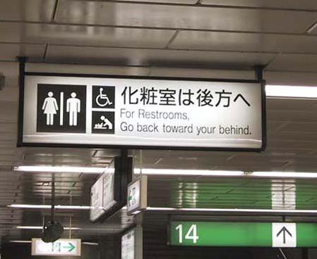

igns, signs everywhere
igns, signs everywhere

s sloppiness in speech caused by ignorance or apathy? I don't know and I don't care.
he following is a telephone exchange between a hotel guest and room-service at a hotel in Asia, which was recorded and published in the Far East Economic Review:
Room Service (RS): "Morrin. Roon sirbees."
Guest (G): "Sorry, I thought I dialed room-service."
RS: "Rye..Roon sirbees..morrin! Jewish to oddor sunteen??"
G: "Uh..yes..I'd like some bacon and eggs."
RS: "Ow July den?"
G: "What??"
RS: "Ow July den?...pryed, boyud, poochd?"
G: "Oh, the eggs! How do I like them? Sorry, scrambled please."
RS: "Ow July dee baykem? Crease?"
G: "Crisp will be fine."
RS: "Hokay. An Sahn toes?"
G: "What?"
RS: "An toes. July Sahn toes?"
G: "I don't think so."
RS: "No? Judo wan sahn toes??"
G: "I feel really bad about this, but I don't know what 'judo wan sahn toes means."
RS: "Toes! toes!...Why jew don juan toes? Ow bow Anglish moppin we bodder?"
G: "English muffin!! I've got it! You were saying 'Toast.' Fine. Yes, an English muffin will be fine."
RS: "We bodder?"
G: "No...just put the bodder on the side."
RS: "Wad?"
G: "I mean butter...just put it on the side."
RS: "Copy?"
G: "Excuse me?"
RS: "Copy...tea...meel?"
G: "Yes. Coffee, please, and that's all."
RS: "One Minnie. Scramah egg, crease baykem, Anglish moppin we bodder on sigh and copy....rye??"
G: "Whatever you say."
RS: "Tenjewberrymuds."
G: "You're very welcome."
arning! Puns ahead!
A certain man was infatuated with a young woman, but was so timid he never had the courage to speak to her. In fact, he told his therapist that every time he got near her he felt like nothing more than a tiny pebble. "Well," his therapist responded, "if you want to get the girl you'll just have to be a little boulder!"
Q: Would Little Miss Muffet share her curds?
A: No whey.
Q: Why did the priest giggle?
A: Mass hysteria.
igns, signs everywhere
On a Septic Tank Truck in Oregon:
"Yesterday's Meals on Wheels"
*******************************
On a Septic Tank Truck sign:
"We're #1 in the #2 business."
**************************
Sign over a Gynecologist's Office:
"Dr. Jones, at your cervix."
**************************
At a Proctologist's door
"To expedite your visit please back in."
**************************
On a Plumber's truck:
"We repair what your husband fixed."
**************************
On a Plumber's truck:
"Don't sleep with a drip. Call your plumber.."
**************************
Pizza Shop Slogan:
"7 days without pizza makes one weak."
**************************
At a Tire Shop in Milwaukee:
"Invite us to your next blowout."
**************************
On a Plastic Surgeon's Office door:
"Hello. Can we pick your nose?"
**************************
At a Towing company:
"We don't charge an arm and a leg. We want tows."
**************************
On an Electrician's truck:
"Let us remove your shorts."
**************************
In a Nonsmoking Area:
"If we see smoke, we will assume you are on fire and take appropriate
action."
**************************
On a Maternity Room door:
"Push. Push. Push."
**************************
At an Optometrist's Office
"If you don't see what you're looking for, you've come to the right
place."
**************************
On a Taxidermist's window:
"We really know our stuff."
**************************
In a Podiatrist's office:
"Time wounds all heels."
**************************
On a Fence:
"Salesmen welcome! Dog food is expensive."
**************************
At a Car Dealership:
"The best way to get back on your feet -- miss a car payment."
**************************
Outside a Muffler Shop:
"No appointment necessary. We hear you coming."
**************************
In a Veterinarian's waiting room:
"Be back in 5 minutes. Sit! Stay!"
**************************
At the Electric Company:
"We would be delighted if you send in your payment. However, if you don't, you will be."
**************************
In a Restaurant window:
"Don't stand there and be hungry, Come on in and get fed up."
**************************
In the front yard of a Funeral Home:
"Drive carefully. We'll wait"
**************************
At a Propane Filling Station,
"Thank heaven for little grills."
**************************
And don't forget the sign at a Chicago Radiator Shop:
"Best place in town to take a leak."
**************************
know that you believe you understand what you think I said, but I'm not sure that you realize that what you heard is not what I meant.
razy headlines
Something Went Wrong in Jet Crash, Expert Says
Police Begin Campaign to Run Down Jaywalkers
Safety Experts Say School Bus Passengers Should Be Belted
Drunk Gets Nine Months In Violin Case
Survivor of Siamese Twins Joins Parents
Farmer Bill Dies In House
Iraqi Head Seeks Arms
Prostitutes Appeal To Pope
Panda Mating Fails; Veterinarian Takes Over
Lung Cancer In Women Mushrooms
Eye Drops Off Shelf
Teacher Strikes Idle Kids
Reagan Wins On Budget, But More Lies Ahead
Squad Helps Dog Bite Victim
Shot Off Women's Leg Helps Nicklaus To 66
Juvenile Court To Try Shooting Defendant
Stolen Painting Found By Tree
Two Soviet Ships Collide, One Dies
Two Sisters Reunited After 18 Years In Checkout Counter
If Strike Isn't Settled Quickly, It May Last A While
Cold Wave Linked To Temperatures
Enfields Couple Slain; Police Suspect Homicide
Red Tape Holds Up New Bridge
Typhoon Rips Through Cemetery; Hundreds Dead
Man Struck By Lightning Faces Battery Charge
New Study Of Obesity Looks For Larger Test Group
Astronaut Takes Blame For Gas In Spacecraft
Kids Make Nutritious Snacks
Chef Throws His Heart Into Feeding The Needy
Arson Suspect Held In Massachusetts Fire
Man Minus Ear Waves Hearing
Steals Clock, Faces Time
Prosecutor Releases Probe Into Undersheriff
Old School Pillars Are Replaced By Alumni
Bank Drive-in Window Blocked By Board
Hospitals Are Sued By 7 Foot Doctors
Some Pieces Of Rock Hudson Sold At Auction
ver wonder?
Why is "abbreviated" such a long word?
Why is the man who invests all your money called a "broker"?
Why is the time of day with the slowest traffic called "rush hour"?
Why are they called "apartments" when they are all stuck together?
If "con" is the opposite of "pro", is Congress the opposite of progress?
If flying is so safe, why do they call the airport the "terminal"?
ood thing you told me!
On a bar of Dial soap: "Directions: Use like regular soap." (and that would be how??...)
On some Swanson frozen dinners: "Serving suggestion: Defrost." (but, it's "just" a suggestion.)
On Tesco's Tiramisu dessert (printed on bottom): "Do not turn upside down."
On Marks & Spencer Bread Pudding: "Product will be hot after heating."
On packaging for a Rowenta iron: "Do not iron clothes on body."
On Boot's Children Cough Medicine:"Do not drive a car or operate machinery after taking this medication." (We could do a lot to reduce the rate of construction accidents if we could just get those 5-year-olds with head-colds off those forklifts.)
On Nytol Sleep Aid: "Warning: May cause drowsiness."
On most brands of Christmas lights: "For indoor or outdoor use only." (as opposed to...what?)
On Sunsbury's peanuts: "Warning: contains nuts."
On an American Airlines packet of nuts: "Instructions: Open packet, eat nuts." (Step 3: maybe, uh...fly Delta?)
On a Swedish chainsaw:"Do not attempt to stop chain with your hands or genitals."
he law of the conservation of consonants
The quantity of consonants in the English language is constant. If omitted in one place, they turn up in another. When a Bostonian "pahks" his "cah", the lost r's migrate southwest, causing a Texan to "warsh" his car and invest in "erl wells."
EAR ABBY: He goes, "English is, like, a mess. Right?"
Dear Abby: What has happened to the English language? The excessive use and misuse of the word "like" is an abomination! To utter the incoherent, "I was, like, you know, going home," incriminates the user as does, "it was, like, Saturday." "Like" is a substitute for "about", "approximately", "similar to", "it may have been", or many other terms or expressions. And "I go" and "he goes" are stupid contortions for "I said, stated, noted, observed", and other correct usages.
"Hopefully" is used far too often and invariably ungrammatically. And athletes, especially, seem incapable of stumbling and fumbling through even a half sentence without a "hopefully". This incorrect redundancy could be replaced with "I hope", "I would hope" or "we will attempt to". The sports announcers are the worst. We can surely do without the "hey" and "guys" in every other sentence. They are so infuriating, I turn them off and walk the dog.
Dear Kenneth: You have found a soul mate in Marcie Mitchell. Read on:
Dear Abby: Will you please make another attempt to improve the atrocious and horrid misuse of our language? Much of it is inarticulate, appallingly sloppy and infuriating to the listener. It is maddening to hear "you know, you know, you know" from so many of the celebrities and athletes interviewed on TV.
One of the most annoying habits is ending every other sentence with "OK?" Some people end every sentence with "RIght?" I know you dealt with this problem several years ago, but it wouldn't hurt to print a reminder.
nterpreter's nightmare
(found in an actual legal text by Alvean Jones)
In the Nuts (unground - other than ground nuts) Order, the expression "nuts" shall have reference to such nuts, other than ground nuts, as would but for this amending Order not qualify as nuts (unground - other than ground nuts) by reason of there beings nuts (unground).
it the road Jack!
As companies try to put a positive spin on the ugly practice of layoffs, they're inventing a new lexicon. Some downsizing lingo:
1. IN A LAUNDROMAT: Automatic washing machines. Please remove all your
clothes when the light goes out.
2. IN A LONDON DEPARTMENT STORE: Bargain Basement Upstairs
3. IN AN OFFICE: Would the person who took the step ladder yesterday please
bring it back or further steps will be taken.
4. IN ANOTHER OFFICE: After the tea break staff should empty the teapot and
stand upside down on the draining board.
5. ON A CHURCH DOOR: This is the gate of Heaven. Enter ye all by this door.
(This door is kept locked because of the draft. Please use side entrance)
6. ENGLISH SIGN IN A GERMAN CAFE: Mothers, Please Wash Your Hans Before
Eating.
7. OUTSIDE A SECOND HAND SHOP: We exchange anything - bicycles, washing
machines etc. Why not bring your wife along and get a wonderful bargain.
8. OUTSIDE A NEW TOWN HALL WHICH WAS TO BE OPENED BY THE PRINCE OF WALES:
The Town Hall is closed until opening. It will remain closed after being
opened. Open tomorrow.
9. OUTSIDE A PHOTOGRAPHER'S STUDIO: Out to lunch. If not back by five, out
for dinner also.
10. SEEN AT THE SIDE OF A SUSSEX ROAD: Slow cattle crossing. No overtaking
for the next 100 yrs.
11. QUICKSAND WARNING: Quicksand. Any person passing this point will be
drowned. By order of the District Council.
12. NOTICE SENT TO RESIDENTS OF A WILTSHIRE PARISH: Due to increasing
problems with litter louts and vandals we must ask anyone with relatives
buried in the graveyard to do their best to keep them in order.
13. SPOTTED IN A SAFARI PARK: Elephants Please Stay In Your Car.
14. NOTICE IN A FIELD: The farmer allows walkers to cross the field for
free, but the bull charges.
15. MESSAGE ON A LEAFLET: If you cannot read, this leaflet will tell you
how to get lessons.
16. ON A REPAIR SHOP DOOR: We can repair anything (Please knock hard on the
door - the bell doesn't work)
17. SIGN AT A NORFOLK FARM GATE: Beware! I shoot every tenth trespasser and
the ninth one has just left!
18. SPOTTED IN A TOILET IN A LONDON OFFICE BLOCK: Toilet out of order.
Please use floor below.
otices posted on church bulletin boards.
Don't let worry kill you - let the church help.
Thursday night - Potluck Supper. Prayer and medication to follow.
Remember in prayer the many who are sick of our church and community.
For those of you who have children and don't know it, we have a nursery downstairs.
The rosebud on the alter this morning is to announce the birth of David Alan Belzer, the sin of Rev. and Mrs. Julius Belzer.
This afternoon there will be a meeting in the South and North ends of the church. Children will be baptized at both ends.
Wednesday the Ladies' Liturgy Group will meet. Mrs. Johnson will sing, "Put Me in My Little Bed" accompanied by the Pastor.
Thursday at 5:00 PM, there will be a meeting of the Little Mothers Club. All ladies wishing to be "Little Mothers" will meet with the Pastor in his study.
The service will close with, "Little Drops of Water." One of the ladies will start quietly and the rest of the congregation will join in.
Next Sunday a special collection will be taken to defray the cost of the new carpet. All those wishing to do something on the new carpet will come forward and do so.
A bean supper will be held on Tuesday evening in the church hall. Music will follow.
At the evening service tonight, the sermon topic will be "What is hell?" Come early and listen to our choir practice.
Calvary Methodist. Come hear Bertha Belch all the way from Africa.
The Fasting & Prayer Conference includes meals."
The sermon this morning: "Jesus Walks on the Water." The sermon tonight: "Searching for Jesus."
Our youth basketball team is back in action Wednesday at 8 PM in the recreation hall. Come out and watch us kill Christ the King.
Ladies, don't forget the rummage sale. It's a chance to get rid of those things not worth keeping around the house. Don't forget your husbands.
The peacemaking meeting scheduled for today has been canceled due to a conflict.
Smile at someone who is hard to love. Say "Hell" to someone who doesn't care much about you.
Miss Charlene Mason sang "I will not pass this way again," giving obvious
pleasure to the congregation.
Next Thursday there will be tryouts for the choir. They need all the help they can get.
Barbara remains in the hospital and needs blood donors for more
transfusions. She is also having trouble sleeping and requests tapes of Pastor Jack's sermons.
The Rector will preach his farewell message after which the choir will sing: "Break Forth Into Joy."
Irving Benson and Jessie Carter were married on October 24 in the church. So ends a friendship that began in their school days.
Eight new choir robes are currently needed due to the addition of several new members and to the deterioration of some older ones.
Scouts are saving aluminum cans, bottles and other items to be recycled. Proceeds will be used to cripple children.
Please place your donation in the envelope along with the deceased person you want remembered.
Attend and you will hear an excellent speaker and heave a healthy lunch.
The church will host an evening of fine dining, super entertainment and gracious hostility.
The ladies of the Church have cast off clothing of every kind. They may be seen in the basement on Friday afternoon.
This evening at 7 PM there will be a hymn singing in the park across from the Church. Bring a blanket and come prepared to sin.
Ladies Bible Study will be held Thursday morning at 10 AM. All ladies are invited to lunch in the Fellowship Hall after the B. S. is done.
The pastor would appreciate it if the ladies of the congregation would lend him their electric girdles for the pancake breakfast next Sunday.
Low Self Esteem Support Group will meet Thursday at 7 PM. Please use the back door.
The eighth-graders will be presenting Shakespeare's Hamlet in the Church basement Friday at 7 PM. The congregation is invited to attend this tragedy.
Weight Watchers will meet at 7 PM at the First Presbyterian Church. Please use large double door at the side entrance.
The Associate Minister unveiled the church's new tithing campaign slogan last supper: "I upped my pledge". "Up yours".
These gaseous observations were made by junior high, high school and college students around the world. It is truly astonishing what weird science our young scholars can create under the pressures of time and grades. From test papers and essays submitted to science and health teachers, here is a dissertation of loopy, unscientific English: (WWW)
When you breath, you inspire. When you do not breath, you expire.
H2O is hot water, and CO2 is cold water
To collect fumes of sulphur, hold a deacon over a flame in a test tube
When you smell an oderless gas, it is probably carbon monoxide
Nitrogen is not found in Ireland because it is not found in a free state
Water is composed of two gins, Oxygin and Hydrogin. Oxygin is pure gin. Hydrogin is gin and water.
Three kinds of blood vessels are arteries, vanes and caterpillars.
Blood flows down one leg and up the other.
Respiration is composed of two acts, first inspiration, and then expectoration.
The moon is a planet just like the earth, only it is even deader.
Artificial insemination is when the farmer does it to the cow instead of the bull.
Dew is formed on leaves when the sun shines down on them and makes them perspire
A super saturated solution is one that holds more then is can hold.
Mushrooms always grow in damp places and so they look like umbrellas.
The body consists of three parts- the brainium, the borax and the abominable cavity. The brainium contains the brain, the borax contains the heart and lungs, and the abominable cavity contains the bowls, of which there are five - a, e, i, o, and u.
The pistol of a flower is its only protections agenst insects.
The alimentary canal is located in the northern part of Indiana.
The skeleton is what is left after the insides have been taken out and the outsides have ben taken off. The purpose of the skeleton is something to hitch meat to.
A permanent set of teeth consists of eight canines, eight cuspids, two molars, and eight cuspidors.
The tides are a fight between the Earth and moon. All water tends towards the moon, because there is no water in the moon, and nature abhors a vacuum. I forget where the sun joins in this fight.
A fossil is an extinct animal. The older it is, the more extinct it is.
Many women believe that an alcoholic binge will have no ill effects on the unborn fetus, but that is a large misconception.
How would you grade these daffy definitions?
Equator: A managerie lion running around the Earth through Africa.
Germinate: To become a naturalized German.
Liter: A nest of young puppies.
Magnet: Something you find crawling all over a dead cat.
Momentum: What you give a person when they are going away
Planet: A body of Earth surrounded by sky.
Rhubarb: A kind of celery gone bloodshot.
Vacuum: A large, empty space where the pope lives.
To close today's lab report, I offer these nuggets of scientific wisdom. Each one an unretouched classroom classic:
Before giving a blood transfusion, find out if the blood is affirmative or negative.
To remove dust from the eye, pull the eye down over the nose.
For a nosebleed: Put the nose much lower then the body until the heart stops.
For drowning: Climb on top of the person and move up and down to make artificial perspiration.
For fainting: Rub the person's chest or, if a lady, rub her arm above the hand instead. Or put the head between the knees of the nearest medical doctor.
For snakebites: Bleed the wound and rape the victim in a blanket for shock.
For dog bite: put the dog away for several days. If he has not recovered, then kill it.
For asphyxiation: Apply artificial respiration until the patient is dead.
To prevent contraception: wear a condominium.
For head cold: use and agonizer to spray the nose untill it drops in your throat.
To keep milk from turning sour: Keep it in the cow.
In a Leipzig elevator: Do not enter lift backwards, and only when lit up.
From the Soviet Weekly: There will be a Moscow Exhibition of Arts by 150,000 Soviet Republic painters and sculptors. These were executed over the past two years.
A modestly priced Tokyo hotel: Hotel guests are requested not to steal towels from their rooms. If you are the kind of person who would not do such a thing, please do not read this message.
From a Yugoslavian elevator: Let us know about an unficiency as well as leaking on the service. Our utmost will improve it.
From Budapest: All rooms not denounced by twelve o'clock will be paid for
twicely.
From a restaurant in Vienna: Fried milk, children sandwiches, roast cattle and boiled sheep.
On a Soviet ship in the Black Sea: Helpsavering apparata in emergings behold many whistles! Associate the stringing apparata about the bosoms and meet
behind. Flee then to the indifferent lifesavering shippen obediencing the instructs of the vessel chef."
On a medicine bottle: Adults: 1 tablet 3 times a day until passing away"
This is a blurb from a chocolate bar wrapper: Soft and mild, like a Japanese woman. Good flavor and full of juice.
From France: A sports jacket may be worn to dinner, but no trousers.
The menu also described an egg as "an extract of fowl, peached or sunside up.
From Singapore: Sir Loin steak with potato cheeps.
From Macao: Utmost of chicken fried in bother.
In an East African newspaper: A new swimming pool is rapidly taking shape since the contractors have thrown in the bulk of their workers.
In a Vienna hotel: In case of fire, do your utmost to alarm the hotel porter.
On the faucet in a Finnish washroom: To stop the drip, turn cock to right.
In the window of a Swedish furrier: Fur coats made for ladies from their own skin.
On the box of a clockwork toy made in Hong Kong: Guaranteed to work throughout its useful life.
Detour sign in Kyushi, Japan: Stop - Drive Sideways
Rhodes tailor shop: Order your summer suit. Because is big rush, we will execute customers in strict rotation.
Portuguese patent agent: 'It will not be necessary to state the name and address of the inventor if the applicant is not himself.'
In a Tokyo Hotel: Is forbidden to steal hotel towels please. If you are not a person to do such thing is please not to read notis.
In a Bucharest hotel lobby: The lift is being fixed for the next day. During that time we regret that you will be unbearable.
In a Leipzig elevator: Do not enter the lift backwards, and only when lit up.
In a Belgrade hotel elevator: To move the cabin, push button for wishing floor. If the cabin should enter more persons, each one should press a number of wishing floor. Driving is then going alphabetically by national order.
In a Paris hotel elevator: Please leave your values at the front desk.
In a hotel in Athens: Visitors are expected to complain at the office between the hours of 9 and 11 A.M. daily.
In a Yugoslavian hotel: The flattening of underwear with pleasure is the job of the chambermaid.
In a Japanese hotel: You are invited to take advantage of the chambermaid.
In the lobby of a Moscow hotel across from a Russian Orthodox monastery:
You are welcome to visit the cemetery where famous Russian and Soviet composers, artists, and writers are buried daily except Thursday.
In an Austrian hotel catering to skiers: Not to perambulate the corridors in the hours of repose in the boots of ascension.
On the menu of a Swiss restaurant: Our wines leave you nothing to hope for.
On the menu of a Polish hotel: Salad a firm's own make; limpid red beet soup with cheesy dumplings in the form of a finger; roasted duck let loose; beef rashers beaten up in the country people's fashion.
Outside a Hong Kong tailor shop: Ladies may have a fit upstairs.
In a Bangkok dry cleaner's: Drop your trousers here for best results.
Outside a Paris dress shop: Dresses for street walking.
In a Rhodes tailor shop: Order your summers suit. Because is big rush we will execute customers in strict rotation.
A sign posted in Germany's Black forest: It is strictly forbidden on our black forest camping site that people of different sex, for instance, men and women, live together in one tent unless they are married with each other or that purpose.
In a Zurich hotel: Because of the impropriety of entertaining guests of the opposite sex in the bedroom, it is suggested that the lobby be used for this purpose.
In an advertisement by a Hong Kong dentist: Teeth extracted by the latest Methodists.
In a Rome laundry: Ladies, leave your clothes here and spend the afternoon having a good time.
In a Czechoslovakian tourist agency: Take one of our horse-driven city tours - we guarantee no miscarriages.
Advertisement for donkey rides in Thailand: Would you like to ride on your own ass?
In a Swiss mountain inn: Special today -- no ice cream.
In a Bangkok bar: It is forbidden to enter a woman even a foreigner if dressed as a man.
In a Tokyo bar: Special cocktails for the ladies with nuts.
In a Copenhagen airline ticket office: We take your bags and send them in all directions.
On the door of a Moscow hotel room: If this is your first visit to the USSR, you are welcome to it.
In a Norwegian cocktail lounge: Ladies are requested not to have children in the bar.
In a Budapest zoo: Please do not feed the animals. If you have any suitable food, give it to the guard on duty.
In the office of a Roman doctor: Specialist in women and other diseases.
In an Acapulco hotel: The manager has personally passed all the water served here.
In a Tokyo shop: Our nylons cost more than common, but you'll find they are best in the long run.
From a Japanese information booklet about using a hotel air conditioner: Cooles and Heates: If you want just condition of warm in your room, please control yourself.
From a brochure of a car rental firm in Tokyo: When passenger of foot heave in sight, tootle the horn. Trumpet him melodiously at first, but if he still obstacles your passage then tootle him with vigor.
Two signs from a Majorcan shop entrance:
nsurance claim accident descriptions.
"The other car collided with mine without giving warning of its intention."
"I thought my window was down but found it was up when I put my hand through it."
"A pedestrian hit me and went under my car."
"The guy was all over the place. I had to swerve a number of times before I hit him."
"I pulled away from the side of the road, glanced at my mother-in-law and headed over the embankment."
"The accident occurred when I was attempting to bring my car out of a skid by steering it into the other vehicle."
"I was driving my car out of the driveway in the usual manner, when it was struck by the other car in the same place it had been struck several times before."
"I was on my way to the doctor's with rear-end trouble when my universal joint gave way, causing me to have an accident."
"As I approached the intersection, a stop sign suddenly appeared in a place where no stop sign had ever appeared before. I was unable to stop in time to avoid the accident."
"The telephone pole was approaching fast. I was attempting to swerve out its path when it struck my front end."
"To avoid hitting the bumper of the car in front, I struck the pedestrian."
"My car was legally parked as it backed into the other vehicle."
"An invisible car came out of nowhere, struck my car and vanished."
"When I saw I could not avoid a collision, I stepped on the gas and crashed into the other car."
"The pedestrian had no idea which way to go, so I ran him over."
"I saw the slow moving sad faced old gentleman as he bounced off the hood of my car."
"Coming home, I drove into the wrong house and collided with a tree I don't have."
"The indirect cause of this accident was a little guy in a small car with a big mouth."
Some grade school teachers must agree with that, because they keep journals of amusing things their students have written in papers. Here are a few examples:
The future of "I give" is "I take."
The inhabitants of Moscow are called Mosquitoes.
A census taker is man who goes from house to house increasing the population.
(Define H2O and CO2.) H2O is hot water and CO2 is cold water.
A virgin forest is a forest where the hand of man has never set foot.
The general direction of the Alps is straight up.
A city purifies its water supply by filtering the water then forcing it through an aviator.
Most of the houses in France are made of plaster of Paris.
The people who followed the Lord were called the 12 opossums.
The spinal column is a long bunch of bones. The head sits on the top and you sit on the bottom.
We do not raise silk worms in the United States, because we get our silk from rayon. He is a larger worm and gives more silk.
One of the main causes of dust is janitors.
A scout obeys all to whom obedience is due and respects all duly constipated authorities.
One by-product of raising cattle is calves.
The four seasons are salt, pepper, mustard and vinegar.
The climate is hottest next to the Creator.
Oliver Cromwell had a large red nose, but under it were deeply religious feelings.
The word trousers is an uncommon noun because it is singular at the top and plural at the bottom.
Syntax is all the money collected at the church from sinners.
The blood circulates through the body by flowing down one leg and up the other.
In spring, the salmon swim upstream to spoon.
Iron was discovered because someone smelt it.
In the middle of the 18th century, all the morons moved to Utah.
A person should take a bath once in the summer, not so often in the winter.
s-communication
The British Government's policy of socialized medicine has recently been broadened to include a service called "Proxy Fathers". Under the government plan, any married woman who is unable to become pregnant through the first five years of her marriage may request the service of a proxy father; a government employee who attempts to solve the couple's problem by impregnating the wife.
The Smiths, a young couple, have no children and a proxy father is due to arrive. Leaving for work, Mr. Smith says, "I'm off. The government man should be here soon." Moments later a door-to-door baby photographer rings the bell...
Ms Smith: "Good morning."
Salesman: "Good morning, madam. You don't know me, but I've come to..."
Ms Smith: "No need to explain, I've been expecting you."
Salesman: "Really? Well, good. I've made a specialty of babies, especially twins."
Ms Smith: "That's what my husband and I had hoped. Please come in and have a seat"
Salesman: (Sitting) "Then you don't need to be sold on the idea?"
Ms Smith: "Don't concern yourself. My husband and I both agree this is the right thing to do."
Salesman: "Well, perhaps we should get down to it."
Ms Smith: (Blushing) "Just where do we start?"
Salesman: "Leave everything to me. I usually try two in the bathtub, one on the couch and perhaps a couple on the bed. Sometimes the living room floor allows the subject to really spread out."
Ms Smith: "Bathtub, living room floor? No wonder it hasn't worked for Harry and me."
Salesman: "Well, madam, none of us can guarantee a good one every time, but if we try several locations and I shoot from six or seven angles, I'm sure you'll be pleased with the results." In fact, my
business card says, 'I aim to please.'"
Ms Smith: "Pardon me, but isn't this a little informal?"
Salesman: "Madam, in my line of work, a man must be at ease and take his time. I'd love to be in and out in five minutes, but you'd be disappointed with that."
Ms Smith: "Don't I know! Have you had much success at this?"
Salesman: (Opening his briefcase and finding baby pictures) "Just look at this picture. Believe it or not, it was done on top of a bus in downtown London."
Ms Smith: "Oh, my!!"
Salesman: "And here are pictures of the prettiest twins in town. They turned out exceptionally well when you consider their mother was so difficult to work with."
Ms Smith: "She was?"
Salesman: "Yes, I'm afraid so. I finally had to take her down to Hyde Park to get the job done right. I've never worked under such impossible conditions. People were crowding around four and five
deep, pushing to get a good look."
Ms Smith: "Four and five deep?"
Salesman: "Yes and for more than three hours, too. The mother got so excited she started bouncing around, squealing and yelling at the crowd. I couldn't concentrate. I'm afraid I had to ask a couple
of men to restrain her. By that time darkness was approaching and I began to rush my shots. When the squirrels began nibbling on my equipment I just packed it all in."
Ms Smith: "You mean they actually chewed on your, eh.., equipment?"
Salesman: "That's right, but it's all in a day's work. I consider my work a pleasure. I've spent years perfecting my patented technique. Now take this baby, I shot this one in the front window of a big
department store."
Ms Smith: "I just can't believe it."
Salesman: "Well, madam, if you're ready, I'll set up my tripod so that we can get to work."
Ms Smith: "TRIPOD?!?"
Salesman: "Oh yes, I have to use a tripod to rest my equipment on. It's much too heavy and unwieldy for me to hold while I'm shooting. Ms Smith?...Ms Smith?...My word, she's fainted!"
If the plural of tooth is teeth, why isn't the plural of booth beeth?
One goose, 2 geese. So one moose, 2 meese? One index, 2 indices? Doesn't it
seem crazy that you can make amends but not one amend? If you have a
bunch of odds and ends and get rid of all but one of them, what do you
call it? If teachers taught, why didn't preachers praught? If a
vegetarian eats vegetables, what does a humanitarian eat?
Sometimes I think all the English speakers should be committed to an
asylum for the verbally insane. In what language do people recite at a
play and play at a recital? Ship by truck and send cargo by ship? Have
noses that run and feet that smell? How can a slim chance and a fat
chance be the same, while a wise man and a wise guy are opposites?
You have to marvel at the unique lunacy of a language in which your house
can burn up as it burns down, in which you fill in a form by filling it
out and in which an alarm goes off by going on. English was invented
by people, not computers, and it reflects the creativity of the human
race (which, of course, isn't a race at all). That is why, when the stars
are out, they are visible, but when the lights are out, they are invisible.
COMPANY
EUPHEMISM
AT&T
Force management program
Bank of America
Release of resources
Bell Labs
Involuntary separation from payroll
Clifford of Vermont
Career-change opportunity
Digital Equipment Corp
Involuntary severance
GM
Career-transition program
Harris Bank of Chicago
Rightsizing the bank
National Semiconductor
Reshaping
Newsweek
Reduction in force (RIF)
Pacific Bell
Elimination of employment security policy
Proctor & Gamble
Strengthening global effectiveness
Stanford University
Repositioning
Stouffer Foods Corp.
Schedule adjustments
Tandem Computers
Reducing duplication or focused reduction
Wal-Mart
Normal payroll adjustment
?
Injected into the job market
 dd signs from England.
dd signs from England.
 ids' whacky answers to science questions.
igns written in English that were found posted in foreign countries.
ids' whacky answers to science questions.
igns written in English that were found posted in foreign countries.
- English well talking.
- Here speeching American.
ids say the darnedest things
 et's face it - English is a crazy language. There is no egg in eggplant nor
ham in hamburger; neither apple nor pine in pineapple. English
muffins weren't invented in England or French fries in France. Sweetmeats are
candies while sweetbreads, which aren't sweet, are meat. We take
English for granted. But if we explore its paradoxes, we find that
quicksand can work slowly, boxing rings are square and a guinea pig is
neither from Guinea nor is it a pig. And why is it that writers write
but fingers don't fing, grocers don't groce and hammers don't ham?
et's face it - English is a crazy language. There is no egg in eggplant nor
ham in hamburger; neither apple nor pine in pineapple. English
muffins weren't invented in England or French fries in France. Sweetmeats are
candies while sweetbreads, which aren't sweet, are meat. We take
English for granted. But if we explore its paradoxes, we find that
quicksand can work slowly, boxing rings are square and a guinea pig is
neither from Guinea nor is it a pig. And why is it that writers write
but fingers don't fing, grocers don't groce and hammers don't ham?
 Return to the table of contents for "Humor and stories for interpreters".
Return to the table of contents for "Humor and stories for interpreters".